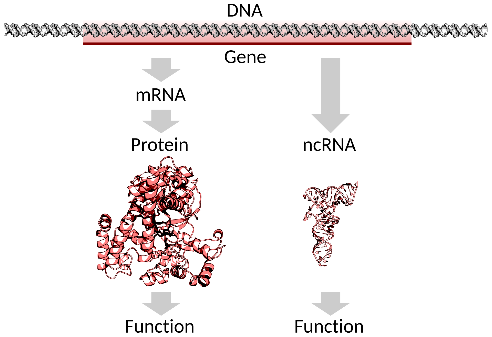
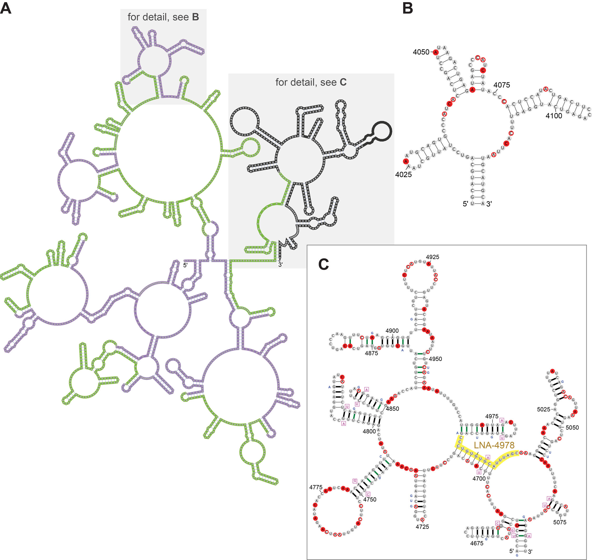

September 1, 2025
I’d like to acknowledge the Kaurna people as the traditional owners and custodians of the land we know today as the Adelaide Plains, where I live & work.
I also acknowledge the deep feelings of attachment and relationship of the Kaurna people to their place.
I pay my respects to the cultural authority of Aboriginal and Torres Strait Islander peoples from other areas of Australia, and pay our respects to Elders past, present and emerging, and acknowledge any Aboriginal Australians who may be with us today

By Thomas Shafee - Own work, CC BY 4.0, Wikimedia Link
The transcriptome can be defined as the complete set of (RNA) transcripts in a cell, or a population of cells, for a specific developmental stage or physiological condition (Wang, Gerstein, and Snyder 2009)
